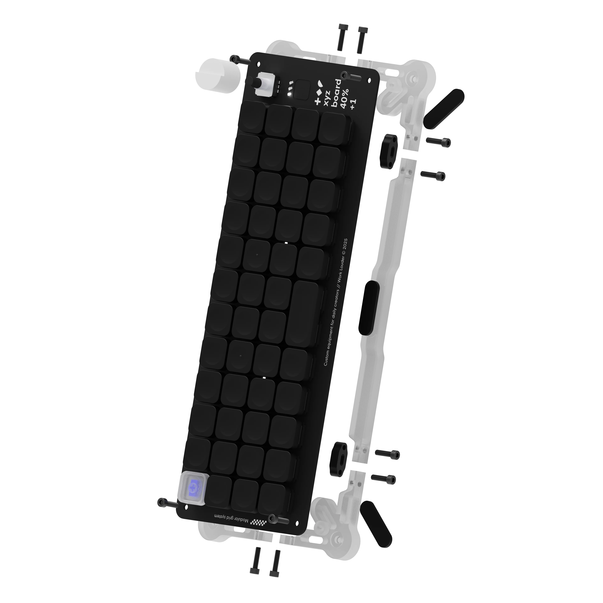

Final project proposal
Brainstorming:
- Low profile keyboard with all the bells and whistles
- Portable midi controller/drum looper like the TE pocket operator
- Digital typewriter with OLED display
- Fast RC car with mechanical suspension
- Colinear mecanum drive robot
- Ultralight mouse with custom PCB
Small PCB camera that uploads photos to web server
Small PCB digicam
I'm a fan of decentralizing your personal technology. Since our phones can do basically anything, its become an essential tool in our daily lives. But, this convenience comes at a cost: whenever I reach for my phone, I end up getting distracted and instinctively doomscroll. Thus, theres been a growing movement to decentralize smartphones—to split the various functions of your phone into its seperate device.
I think it would be really cool to have a small digicam contained on one PCB that could upload pictures to a self-hosted server. I like to bike around the city sometimes and I think taking pictures would be a cool way of documenting my adventures. A low-cost portable camera that I don't have to worry about losing or breaking would be super useful. There is also a lot of novelty surrounding disposable film cameras, which this project takes a lot of inspiration from. Photos can't be immediately viewed on the device itself (mimicing how you have to develop film) and these cameras are very cheap and expendable.
While this a project that I have absolutely zero experience with, it would defiently be a good learning experience. I can also think of how I'd break down this problem into several smaller, more managable problems (upload placeholder file to web server with ESP32 dev kit, create custom ESP32 camera with flash, etc.).
Portable midi controller/drum looper
I'm dead set on a project that involves creating a custom PCB, so another cool PCB project I've seen is the Teenage Engineering Pocket Operator. These things are definetly something I'd like to have sitting on my desk or shelf and I think I'd learn a lot about electronics if I were to create one myself.
The biggest concern with this project is feasibility. Programming the music software and designing the audio hardware will be significant challenges. I remember hearing that playing sounds with microcontrollers is difficult/finnicky so its very likely that my audio will be really low fidelity beeping. Programming the software for a musical device with features like looping also sounds complicated.
A custom low-profile keyboard

I've been interested in custom keyboards for a while now and have even dabbled in making my own macropad. As I shift from working at home to libraries (I spend most of my time in the Cabot Library or Smith Center), a portable, low profile custom keyboard would be nice to have.
I've tried to design my own macropad PCB, and while the core functionality of the keyboard worked, I wasn't actually able to get the macropad, display, and RGB working. I feel like returning this project in PS70 would be a good way to redeem myself while also giving me a challenging but definetely doable project.
The goal is to have a 65% keyboard utilizing Kalih low profile chocolate switches with RGB and a rotary encoder. I also want to try implementing some creating space saving designs (ie. creating a backplate that also doubles as a case). I'm taking inspiration from the Work Louder keyboards.
Theres definetly some cons to this project. For one, this is a project I already have experience in. Despite not finishing my macropad, this project won't force me to do something I've never done before compared to other projects. Also, I'm not entirely sure on the utility of this project since the most portable option for typing on the go is the keyboard on my laptop...
I want to follow through with PCB digicam project!!!
This project is a good balance of technical complexity, utility, and novelty.
Most importantly, it's the thing I'd want to see made the most .
Here's a vague timeline of the stuff I'd need to do:
- Get a ESP32 devkit to upload files onto a webserver
- Prototype circuit on breadboard to take pictures with and without flash
- Create PCB to replace prototype
- Design and manufacture minimal 3D printed case and lanyard
From what I understand, there already exists an ESP32 module with an onboard camera called the ESP32-Cam. It supports a variety of camera modules, a ESP32-S SoC for image capture and basic ML tasks, and MicroSd card support. However, it requires either a USB to serial adapter (FDTI programmer) or the ESP32-CAM-MB since it doesn't have a USB port.
This would be a good starting point for my project since I could use it to work on the software for my project before creating a fully fleshed out custom PCB. However, it's lackluster image quality, lack of a USB port, and lack of a battery warrant the creation of a new board with these features and a much better image sensor. This is where things get difficult. I need to research a better image sensor that can still with work the limitations of an ESP32 SoC in order to utilize the wifi capabilities. Since the ESP32 doesn't really have enough RAM or processing power, it may be necessary to choose a different SoC.1